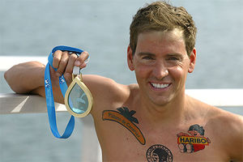
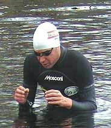
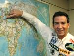
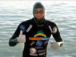
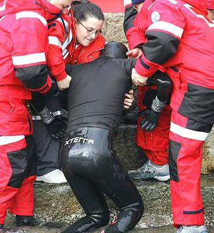
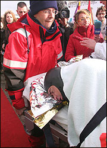

David Meca
 De: La Frikipedia, la enciclopedia extremadamente seria.
De: La Frikipedia, la enciclopedia extremadamente seria.
 David Meca sin gafas de las de nadar, como puede observarse
 David Meca aquejado de apretón en mitad de una travesía

David Meca a toda máquina
 David Meca planeando su próxima vuelta al mundo sin escalas
 David Meca tras finalizar su última hazaña
 David Meca dos segundos depués de ser tomada la foto anterior. "Dejádme... Sólo es un mareo"
 David Meca un minuto después de ser tomada la foto anterior. "Brrr, Brrr... ¿Lo he hecho bien Poty? Brrr... ¿Poty? Brrr..."
David Meca Medina, natural de las piscinas de Sabadell (Barcelona), más conocido como el delfín mapache por carecer de pigmentación melanínica alrededor de las cuencas oculares, es un nadador catalán de afamada reputación dentro del mundillo este de la natación campo a través, o aguas abiertas (no nesesariamente debido a la presencia de Moisés).
Memorias de un Homo Asapiens. De vendedor ambulante a nadador
David Meca nació en el seno de una humilde familia sabadellense, la Familia de Aragón ( a saber, Duque de Segorbe, Duque de Gandía y Duque de Villahermosa). Dadas las dificultades económicas de la familia como consecuencia de la subida del petróleo durante la Guerra del Golfo, David Meca no pudo culminar uno de sus entonces mayores sueños, la adquisición de una Game Boy con carcasa rojo-metalizado, por lo que decidió emanciparse a la corta edad de siete años y dedicarse a la venta ambulante de castañas torradas en ferias y fiestas de pueblo. Amparado por una familia guitana, Meca recorrió media Cataluña y, como es natural, el único agua que llegó a rozar su piel en todo ese período no fué más que la acaecida en los días lluviosos. A los 17 años un joven David Meca vió por primera vez el mar, durante las fiestas de San Isidro en el puerto de Palamós. Instantánemanete sintió un impulso incontrolable en su interior y corrió efusivamente hacia las aguas como alma que carga el diablo, como Forrest Gump incitado por su madre ("¡Corre Forrest!¡Corre!"). Una capacidad innata tomó posesión instantánea de su voluntad y David Meca se sumergió en las aguas del mar Mediterráneo, que desde tiempos de Poseidón no dislumbraba cual figura antropomorfa describiendo cuales harmónicos movimientos hidrodinámicos. Así es como por uno de aquellos extraños caprichos del destino, y cosas raras en general como las presenciadas por John Locke en la isla, David Meca fué llamado a ser el más grande nadador humano de todo el domino espacio-tiempo. Desde ese preciso instante, David Meca no volvió a abandonar el que sería su nuevo medio natural, mas que para participar en un concurso de baile en televisión y recoger alguna que otra medalla en tierra.
Hazañas logradas
David Meca ostenta un total de 87 proezas humanas, entre las que cabe destacar:
- 1990, 1991, 1992, 1993, 1993, 1994, 1995, 1997, 1998: Campeón del Descenso a Nado de la Ría del Navia. La proeza humana no consistió en proclamarse campeón en 9 ediciones consecutivas, que también, sino en ir rebajando sucesivamente la marca inicialmente establecida en 25 min. y 32 seg., hasta dejarla en -3 seg. y ocho décimas.
- 1998-2005: Campeón de diferentes certámenes y ganador de medallas tanto olímpicas como de la Copa del Mundo. Vamos, que se tomó unos años de descanso.
- Primer hombre en huir a nado de la prisión de Alcatraz, con grilletes, entre tiburones y abandonado a su suerte, esto es, sin equipo médico velando por su integridad física.
- Travesía a nado del Estrecho de Gibraltar. Otros lo habían intentado antes y lo cierto es que lo habían logrado también. No obstante David Meca, además de ser más rápido que todos sus predecesores, remolcó durante la travesía un total de 393 pateras con sus correspondientes imigrantes ilegales a bordo. Al completar la hazaña fué recibido en las costas de Cádiz por la Guardia Civil, invitándole a pasar una temporada en los calabozos de Barbate, donde conoció al que a partir de ese momento pasaría a ser uno de sus más íntimos amigos y seguidores, Michael Schumacher (ver foto).
- Unió a nado las islas de la Gomera y [[Tenerife, alimentándose únicamente de ballenas. Así como las islas de Tenerife y Las Palmas, cubriendo un total de más de 100 Km. Como 100 Km a nado se le antojó poco a este portento de la naturaleza, en el próximo reto decidió ampliar la proeza y nadar de Jávea a Ibiza, separádas tan sólo por 110 Km, por lo que Meca estimó opurtuno no nadar la distancia más corta que las separa, sino la más larga, los aproximadamente 40000 Km (perímetro de la Tierra) menos los 110 Km procedentes.
- Cruzar el Lago Ness a nado entre sus extremos más alejados. Un total de 23 Km, en invierno, con una capa de hielo de 17 pulgadas y siete onzas de espesor. Como curiosidad cabe destacar que se procedió al desalojo del famoso monstruo del lago para prevenir cualquier tipo de daño de éste, la atracción turística principal de la zona.
- Travesía a nado del desierto del Sahara (Dakar-Egipto). Tras finalizar la hazaña David Meca aseguró que podría haber mejorado el registro logrado de no habérsele metido arena en las gafas, lo que le dificultó la horientazión.
- Travesía a nado del Canal de la Mancha. Nuevamente, como el paso más angosto está en el paso de Calais, donde sólo 34 km de distancia separan Dover (Inglaterra) y el Cabo Gris-Nez (Francia), David Meca estimó oportuno incrementar la dificultad de la hazaña. Para ello se hizo implantar dos electrodos debajo de la epidermis, uno en cada lóbulo temporal. Controlados por un chip Nokia 6103, dichos electrodos eran capaces de emitir brutales descargas eléctricas con cada sístole del corazón, estimulando todo el sistema nervioso central en bloque, alcanzándose así el límite absoluto del dolor. Como es natural, dicho umbral debe estimarse y calibrarse previamente según el sujeto, por lo que además de los electrodos hubo que proceder al implante extra de 10 mini baterias termonucleares en la espalda del nadador, dado el nivel de potencia requerido. Finalizada la hazaña, David Meca se negó a que los cirujanos procedieran a la retirada del complejo dispositivo electrónico, alegando que se había acostumbrado y que le daban miedo los quirófanos.
- Nado a contracorriente del río Guadalquivir desde Sanlúcar de Barrameda hasta Sevilla. De hecho más que una hazaña se trató de un pequeño favor, puesto que una importante multinacional petrolera se quedó sin remolcadores y debía proceder al desplazamiento de siete petroleros hasta el puerto de Sevilla.
- Entre las futuras hazañas que planea realizar David Meca se encuentran la remontada de los rápidos de Veracruz, nadando en estilo salmón, técnica que según parece entraña una dificultad extrema. Así mismo, después de la sexta temporada de Perdidos, y si es que finalmente se acaba desvelando la ubicación de la isla, Meca intentara unir a nado la isla con la costa californiana.
Otros méritos
- David Meca cursó estudios de Arte Dramático en la Universidad del Sur de California, lo que le ha permitido dedicarse al doblaje de escenas de acción en películas como La Sirenita, Liberar a Willi, Waterworld y Mar Adentro, así como en series de televisión como Verano Azul, seaQuest y Musculman entre otras.
- David Meca aparece asíduamente en distintos programas de televisión, mayormente en los documentales de la 2. No obstante, ha participado también en múltiples concursos: Saber y ganar, La Granja de los Famosos y Mira quien baila. A pesar de las innegables cualidades polifacéticas del nadador, lo cierto es que su paso por dichos concursos no le han deparado los éxitos cosechados como nadador profesional. Su mejor resultado fué un tercer puesto en la tercera edición de Mira quien baila, por detrás de Rosa de España (cantante y miembro Honoris causa desde 2006 de la Real Academia de la Lengua Española) y Milene Domingues (futbolista, ex-mujer de Ronaldo), lo cierto es que pese al tercer puesto obtenido, David Meca estuvo a la altura, imponiéndose no obstante la ballena al delfín en este caso.
Patrocinadores oficiales
Todos los contratos publicitarios son de carácter vitalício y, por tanto, están tatuados en el cuerpo de David Meca. A pesar de que dada la popularidad del personaje el número de patrocinadores sigue creciendo, ésta es la lista hasta la fecha (ordenada cronológicamente):
Plátano de canarias, Polaris World, Masconi, Black&Decker, Michelin, Nocilla, Helwet Packard, Nestlé, Canon, Cisco Systems, Microsoft, L'Oréal, Novell, Ferrari, Oracle, Sun Microsystems, HSBC Holdings, Schlumberger Ltd, Telecom Argentina, Total, Pepsi, Repsol YPF, National Telephone Co of Venezuela, BBVA, Northern Orion Resources Inc, Samsung, Gravity Co., Ltd, Siemens Aktiengesellschaft, Australia & New Zealand Banking Group Ltd, Toshiba, Airbus, Allianz, Coca-Cola, Vodafone, BASF, Altria Group, Gillette, LG, Ferrero Roche, The Walt Disney Company, Lockheed Martin, Honeywell, Yakult, Toyota, Malaysia Airlines, Bayer, Google, Epson, ExxonMobil, GlaxoSmithKline, Fiat, General Electric, Gerdau, General Motors, Ford Motor Company, Verizon, Monsanto, Faber-Castell, Boeing, Chevron Corporation, Bank of America, Brantano Footwear, ConocoPhillips, Bombardier, Citigroup, Schweppes, BP, Capital One, JP Morgan Chase, Orange, Pfizer, Novartis, Sony, Telmex, Nike, Nissan, Philips, Procter & Gamble, O2, Telefónica Movistar, Mac Donalds, Petronas y Proton.
La lista puede resumirse si se considera la lista completa de multinacionales mundial, eliminando únicamente Hutchison Whampoa Limited y Cognizant Technology Solutions y añadiendo al resultado Plátano de canarias.
Ver también
Autor(es):
- Frikiman
- Viento
- Guilfer
- Pzkw
- Frikih
- GonzaloQ
- NRikee
- Diamondheart
- Arbosa
- Th´albert
Frikipedia 2005-2016, Licencia
GFDL 1.2 - Extraído por FrikiLeaks